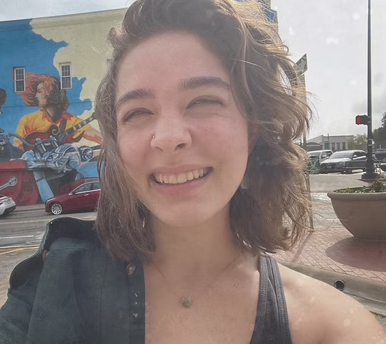

Hello
Chris King is a University of North Texas graduate, majoring in Drawing and Painting and minoring in Art History. They have recently relocated to Starkville, Mississippi.
@cryptic_loaf
My Story
I am a University of North Texas graduate majoring in Drawing and Painting.
My educational aspirations consist of acquiring a bachelor's degree in
fine arts and minoring in art history; this will help me pursue a career
as an illustrator. I hope to make a career by providing illustrations for books,
comics, and graphic designs because of the importance of what illustrations
meant to me in elementary school.
I was diagnosed with dyslexia as a child.
Dyslexia caused me to struggle with reading and writing and have a
lower reading level than most students in elementary school.
The only books I could understand were the books with illustrations.
I loved storytelling, but I was never great with my words, so I began to draw.
Ever since then, it has been a goal of mine to accomplish a career as an artist.
Contact
I'm always looking for new & exciting opportunities.
Let's connect!
ChrisKingArtistry@gmail.com
She/They